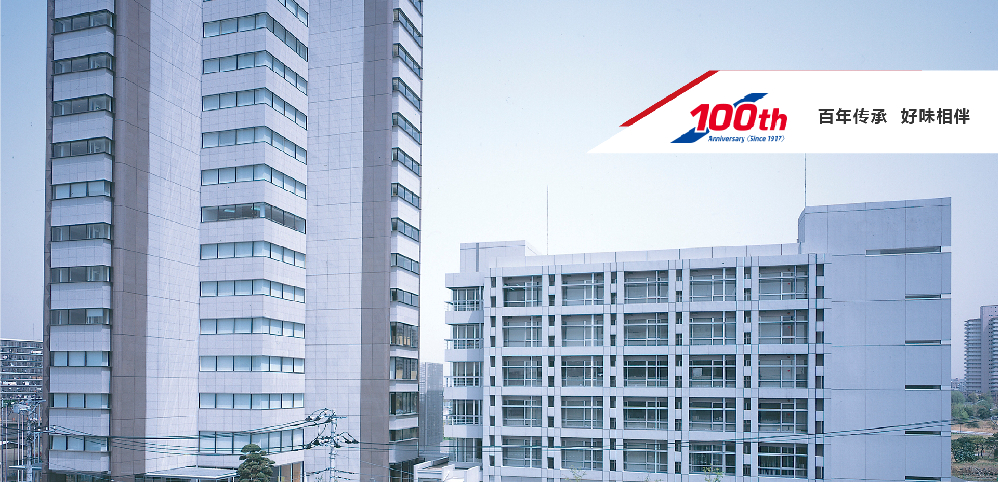
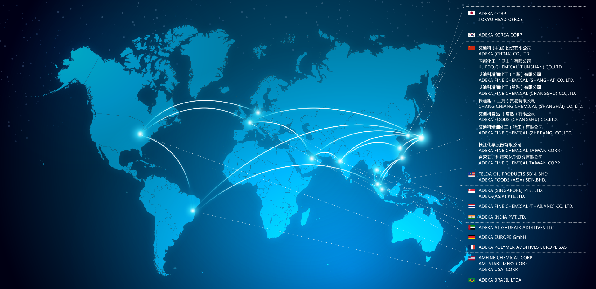
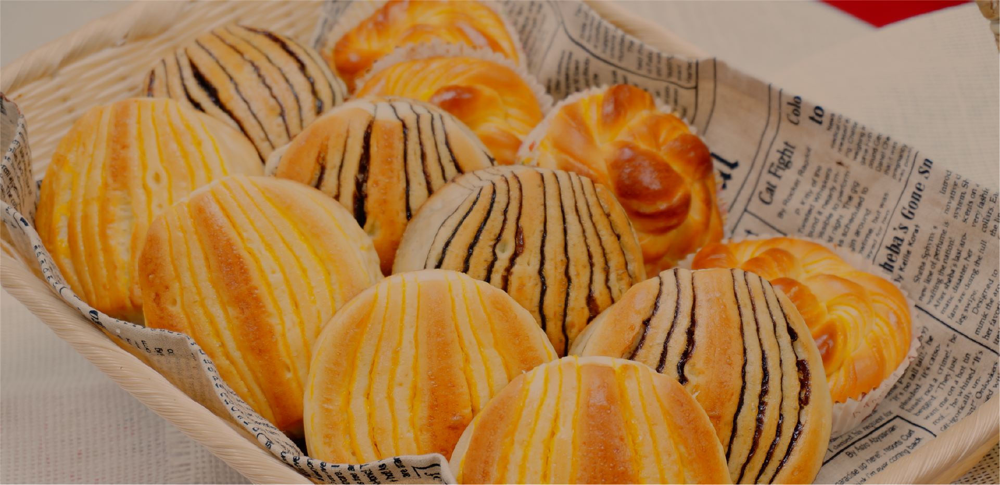
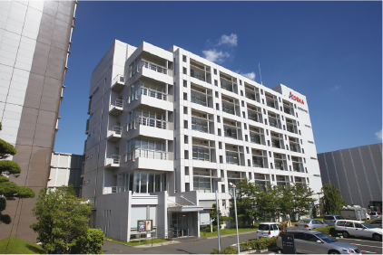
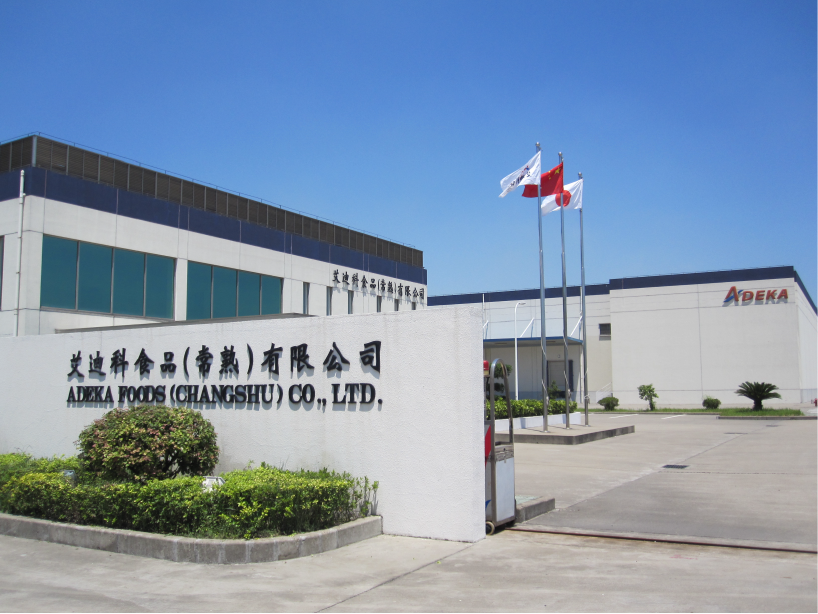
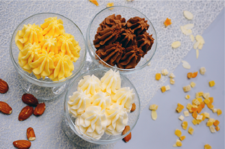
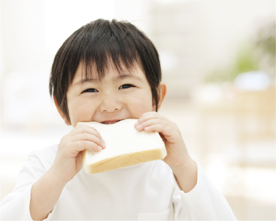

 @@include("html/header.html")

<body>
  @@include("html/nav.html")

  <div id="myCarousel" class="carousel slide">
    <div class="carousel-inner">
      <div class="item active" style="background:#223240">
        
      </div>
      <div class="item" style="background:#F5E4DC;">
        
      </div>
      <div class="item" style="background:#DE2A2D;">
        
        <div class="about-content-wrap">
          <div class="about-content">美味放心的最佳搭档 价值创新的首选用料</div>
          <div class="about-info">ADEKA集团的食品事业“RISU BRAND”在美味放心的最佳搭档基础之上<br> 从“安心、安全”、“美味”、“健康”3者出发为顾客提案。</div>
          <ul class="about-circle">
            <li>油脂结晶<br>调整技术</li>
            <li>乳化技术</li>
            <li>风味调整技术</li>
          </ul>
        </div>
      </div>
    </div>
    <a href="#myCarousel" data-slide="prev" class="carousel-control left">
      <span class="glyphicon glyphicon-chevron-left"></span>
    </a>
    <a href="#myCarousel" data-slide="next" class="carousel-control right">
      <span class="glyphicon glyphicon-chevron-right"></span>
    </a>
  </div>
  <div class="aboutus-wrap">
    <ul class="aboutus-wrap-tab">
      <li class="aboutus-active">百年传承</li>
      <li class="">全球视野</li>
      <li class="">健康美味</li>
    </ul>
    <div class="aboutus-content" style="display: block;">
      <div class="aboutus-content-wrap">
        <div class="aboutus-info-1">
          凭借ADEKA(原旭电化工业株式会社)长年积淀的高精技术与全球最先进的生产设备、凭借公司强大的研发能力，自成立以来，生产开发出无数种卓越的食用油脂，尽可能满足所有客户的各种需要。莉仕品牌，为食品行业的进步做出了巨大贡献，并始终坚持为客户提供更高品质、领先时代的食用油脂。
        </div>
        <div class="aboutus-img-wrap">
          
          
        </div>
      </div>
    </div>
    <div class="aboutus-content" style="display: none;">
      <div class="aboutus-content-wrap">
        <div class="aboutus-info-1">
          艾迪科集团所属企业遍布世界，依靠日本总部的先进技术和雄厚实力，在世界各地拥有超过22个研发机构和生产工厂，我们相信，在全球化的大环境下，整合世界级的智慧与生产力，能为我们的用户提供更优秀的产品和更卓越的服务。 </div>
        <div class="aboutus-info-2">
          放眼全球，立足根本，在我们的不懈努力下，艾迪科全球网络使我们为消费者带来更美味、更安全的食品原料的基石更加坚实，我们也会为消费者带来无与伦比的味觉体验，并为此不懈努力。 </div>
        
      </div>
    </div>
    <div class="aboutus-content" style="display: none;">
      <div class="aboutus-content-wrap">
        <dl>
          <dt></dt>
          <dd>
            <div class="aboutus-content-title">值得信赖的油脂加工技术</div>
            <div class="aboutus-content1">从1929年“RISU印”的麦淇淋诞生开始，ADEKA的RISU BRAND产品遍布烘培店、西店铺、超市和便利店。 运用专利技术加工食品原材料，开发满足人们需求的产品，丰富人们的饮食生活。 比如，在烘培市场上，从口感、香味、口味的基础调研，到新风味材料开发。根据产品的实际应用开展综合调查，提供麦淇淋、起酥油这些高性价比产品。另外，业界先驱性地开创低反式脂肪酸产品和低食品添加产品，始终贯穿实施安心、安全以及美味的ADEKA产品因此在食品界获得高度信赖。</div>
          </dd>
        </dl>
        <div class="aboutus-content-head">严禁对待食品安全</div>
        <dl>
          <dt> 
            
          </dt>
          <dd>
            <div class="aboutus-content1">ADEKA作为一家严谨对待食品安全的企业，持续提供安全、安心的产品。以“5S”、“4C安全（劳动、品质、设备、环境）”、“PDCA循环周期”为基础，积极推进改良改善。从原料到配送的整套供应链管理，维持品质安全，提供让顾客信赖的、安全、高品质的全球化产品。</div>
            <div class="aboutus-content2">关于品质安全，每年制定“品质安全方针”，研究开发、供应、制造都力争做到更好。自有的原料系统则会在最初原料选择阶段开始严格把关，只采用确认安全无误的优质原料。生产设备也定时更新，拥有映像设备、恒温管理、工厂入场认证系统、高精分析器械等符合当今时代要求的设备。生产工程由符合工厂产量的管理系统管理。以前是“TPM活动”，现在则是“ISO9001”、“HACCP”为基础，包含了“FSSC22000”、“GMP”等思考方式。关于国际标准“FSSC22000”,现在所有日本3家工厂，以及包括中国大陆在内的5家工厂中的3家已取得相应证书。</div>
          </dd>
        </dl>
      </div>
    </div>
  </div>
  @@include("html/footer.html")

  <script>
    $('#myCarousel').carousel({
      //设置自动播放/3 秒
      interval: 300000,
    });
    $('.aboutus-wrap-tab li').click(function(e, i) {
      $(this).parent().children().removeClass('aboutus-active')
      $(this).addClass('aboutus-active')
      var index = $(this).index()
      $('.aboutus-content').hide();
      var hover = $('.aboutus-content')[index]
      $(hover).show()
    })
  </script>
</body>

</html>